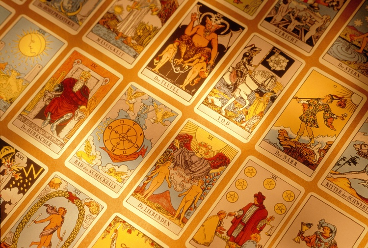
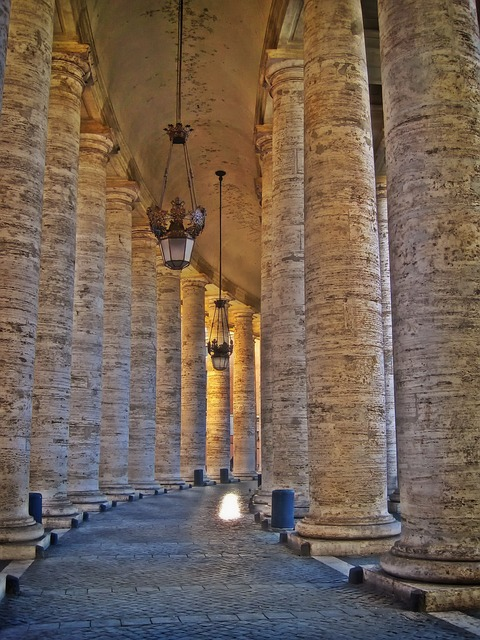

History & Background
Q: Where did tarot start?
The first known Tarot deck can be traced back to Italy in 1440. The Duke of Milan commissioned a painter to design a deck of playing cards for him, starting the "golden age of tarot", with rich aristocrats commissioning one-of-a-kind decks to reflect their personal interests.
Early tarot decks consisted of a regular 56-card deck combined with 22 personalized cards, for a total of 78 cards. They were originally used for game-playing among the elite.There is evidence that tarot was used for divination from early on in its history, but this was not a widespread practice until the 18th century.
Learn more:
1 |
2
Q: What is the history of tarot decks?
1420-1440: Decks are designed individually for the upper classes, hand-painted and decorated with gold.
Circa 1480: The French created the set of modern playing cards, with hearts, clubs, spades and diamonds.
1500s: With the creation of the Gutenberg Press, tarot decks started to be mass-printed. Decks became more standardized, and more affordable to people at varying levels of social class.
16th century: The Marseilles Tarot becomes the most widely used deck.
1788: The Ettellia Tarot Deck becomes the first deck made specifically for the use of divination.
1909: The classic Waite-Smith Tarot deck is published. This is the first deck to include illustrations for all the suit cards, and is still known as a "standard" tarot deck.
Full Timeline:
1